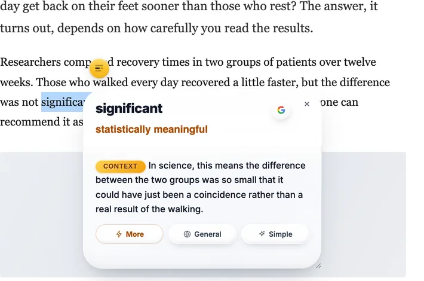
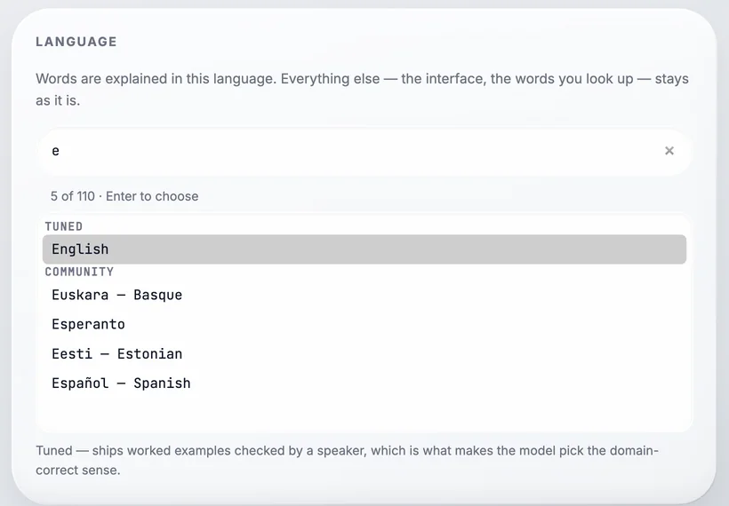

Why it is harder than it looks
English gives ordinary words a second job
Every field takes normal words and makes them technical. You know all of these words already, and in the wrong place every one of them will mislead you.
You can follow the sentence and still miss the point
This is the quiet one. When a word has a meaning you know, your brain takes it and moves on. There is no gap, no confusion, nothing that makes you stop and check. You only find out later, if you find out at all.
A dictionary gives you a list, not an answer
Look up one of these and you get eight meanings, sometimes with the one you need at number six. Choosing between them needs the thing you do not have yet: knowing what the text is about.
| Word | What you know | What it means in that field |
|---|---|---|
| significant | big, important | in a study: the result is probably not chance. It can still be tiny. |
| positive | good news | in a lab result: the thing was found. Usually bad news. |
| consideration | being thoughtful | in a contract: what each side gives to make it binding. |
| execute | to kill | in law and software: to sign, or to run. |
| liability | a risk, a problem person | in accounts: money you owe. |
| exposure | being out in the cold | in finance: how much you stand to lose. |
| regression | going backwards | in statistics: a way of fitting a line to data. |
| host | someone who has guests | in computing: a machine; in biology: the body a parasite lives in. |
The culture came back positive after forty-eight hours, so the ward started antibiotics.
What you readCulture as art, music and customs. Positive as good news. Both are the meanings you learned first, and here both are wrong.
What it saysA sample was grown in a lab, bacteria were found, treatment started. The words that tell you this are ward and antibiotics — outside the word you got stuck on.

Why translating the word usually does not fix it
The obvious move is to translate. For a whole page in a language you cannot read at all, that is the right move. For one word in a page you can mostly follow, it often gives you the same problem in your own language.
A word on its own carries no context, so a translator answers with its most common meaning — the everyday one, not the one your page is using. Give it the whole sentence and it does better, but now the word you were stuck on comes back as a word in your language that you may also not know. I wrote about the mechanics of this in why Google Translate gets words wrong. The short version: translation is built to move a sentence into another language, not to explain one word inside it.
Four habits that help, with no tool at all
Read one sentence further before you stop
Writers explain their own terms more often than you expect, usually right after the first use, in brackets or after a comma. Half the words I mark are explained on the next line.
Do not stop for every unknown word
Stop only for the ones the paragraph depends on. Mark the rest and keep going. Stopping at each one is how a two-page text turns into an hour and you remember none of it.
Say what the text is about, in your own language
Before you trust your reading, put the subject into one sentence for yourself: this is about a trial, a lease, a bug report. Most wrong readings are a word taken out of its field, and naming the field catches them.
If you translate, give it the sentence
Never the word alone. Paste the whole sentence, read the result, and find your word inside it. It takes two seconds and it fixes most bad translations.
How Context Reader helps, and why it works that way
Everything above is what I did before I built anything. It works, and it is slow. So the extension does the same thing in one click.
You select a word, and it sends the paragraph with it. That is the whole idea. The model gets what you got: the word, and the sentences around it. So the answer is not every meaning of the word — it is the one that fits this paragraph, written in your language, on the page you were already reading.
One answer, not a list
When you are stuck you do not want a menu. You get one meaning first. If you want more, More gives a short example in the same world as the page, General gives the word’s other uses, and Simple says it again in the plainest words.
It works inside one language too
If you are reading in your own language and a word stops you, it does not translate the word into itself. It gives you a simpler word for it. Being stuck is not only about foreign languages.
Honest about where it is weak

It offers 110 languages, but only English and Sinhala ship examples checked by a speaker, and the extension tells you which is which when you choose. The answers are written by a model, so they can be wrong. The EN button shows the same answer in English, which is the fastest way to check one.
It watches nothing
No account, no analytics, no server. It calls Google’s Gemini API straight from your browser with your own free key, so nobody — me included — has a list of the words you looked up. The code is public, so that is checkable rather than promised.
The thing I wish someone had told me
If you read something in English slowly, and you had to look up nine words, you did not read it badly. You read it. Reading in a second language is not a test of how much English you have. It is knowing which words are worth stopping for, and having a fast way to get past them. Everything else is practice.
Questions
Why is reading in English hard even when I know the words?
Because the words you know are used differently in different subjects. English gives ordinary words a second job in medicine, law, business and software. You read the sentence, it makes sense, and it is not the sense the writer meant.
Does translating the page help?
For getting the general idea, yes. For one word you are stuck on, often not. A word on its own has no context, so a translator gives you its most common meaning, which is usually not the specialist one.
Should I look up every word I do not know?
No. Mark it and read one more sentence. Writers explain their own terms more often than you think. Stop only for a word the paragraph depends on.
How does Context Reader help?
You select the word, and it sends the paragraph around it too. The answer is the one meaning that fits that paragraph, in your language, on the page you are reading. It is free, it uses your own Gemini API key, and it collects nothing.
Next: why Google Translate gets words wrong, which is the same problem seen from the translator’s side.
Free, from the Chrome Web Store. Works in Chrome, Brave and Edge. It needs your own free Gemini API key, which takes about a minute to get.